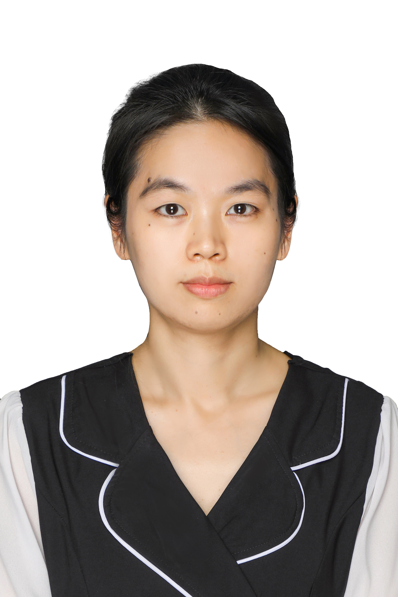

|  |
|
Associate Professor
School of Mathematical Sciences Dalian University of Technology No.2 Linggong Road, Ganjingzi District, Dalian, Liaoning, China, 116024 Email: huanghui@dlut.edu.cn |
| Home ⋅ Publications ⋅ Talks |
I am currently an associate professor in the School of Mathematical Sciences at the Dalian University of Technology.
Previous to this (September 2017-June 2020), I was a postdoctoral fellow in the Symbolic Computation Group at the University of Waterloo, working with Mark Giesbrecht, George Labahn and Eugene Zima.
In March-August 2017, I was a postdoctoral fellow in the Institute for Algebra at the Johannes Kepler University Linz, working with Manuel Kauers.
In February 2017, I completed dual doctorates at the Johannes Kepler University, Linz, Austria and the Chinese Academy of Sciences, Beijing, China under joint supervision of Manuel Kauers (Institute for Algebra, JKU) and Ziming Li (Academy of Mathematics and Systems Science, CAS). My PhD thesis is available here (see also version in Chinese).
My scientific interests are computer algebra, symbolic summation and integration, Ore algebras, symbolic asymptotics and the applications of all that in combinatorics and elsewhere.
More information can be found in my CV.